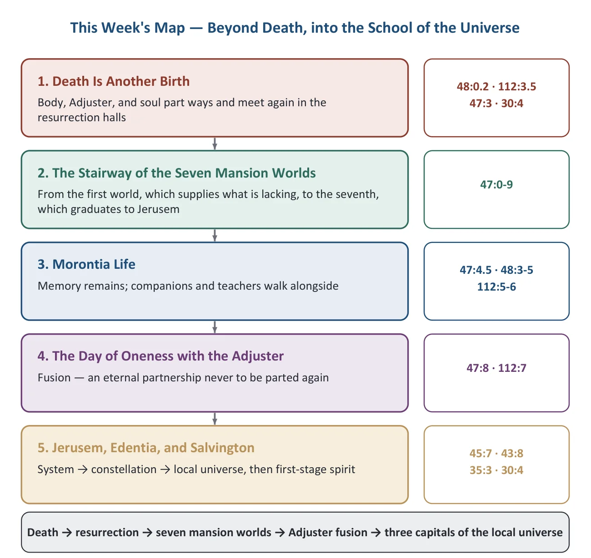
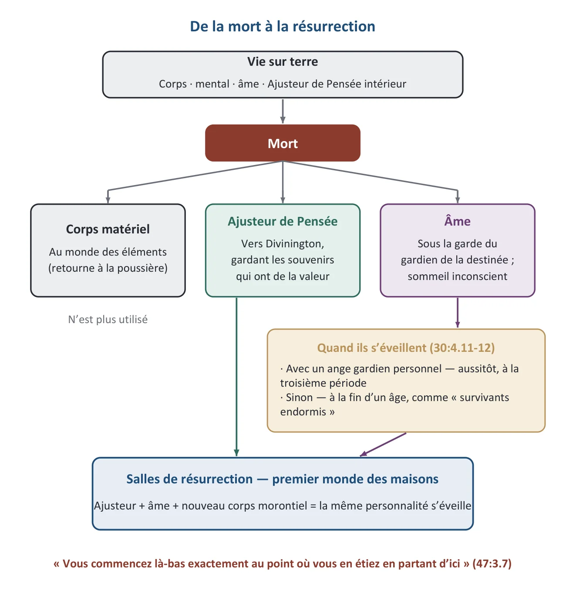
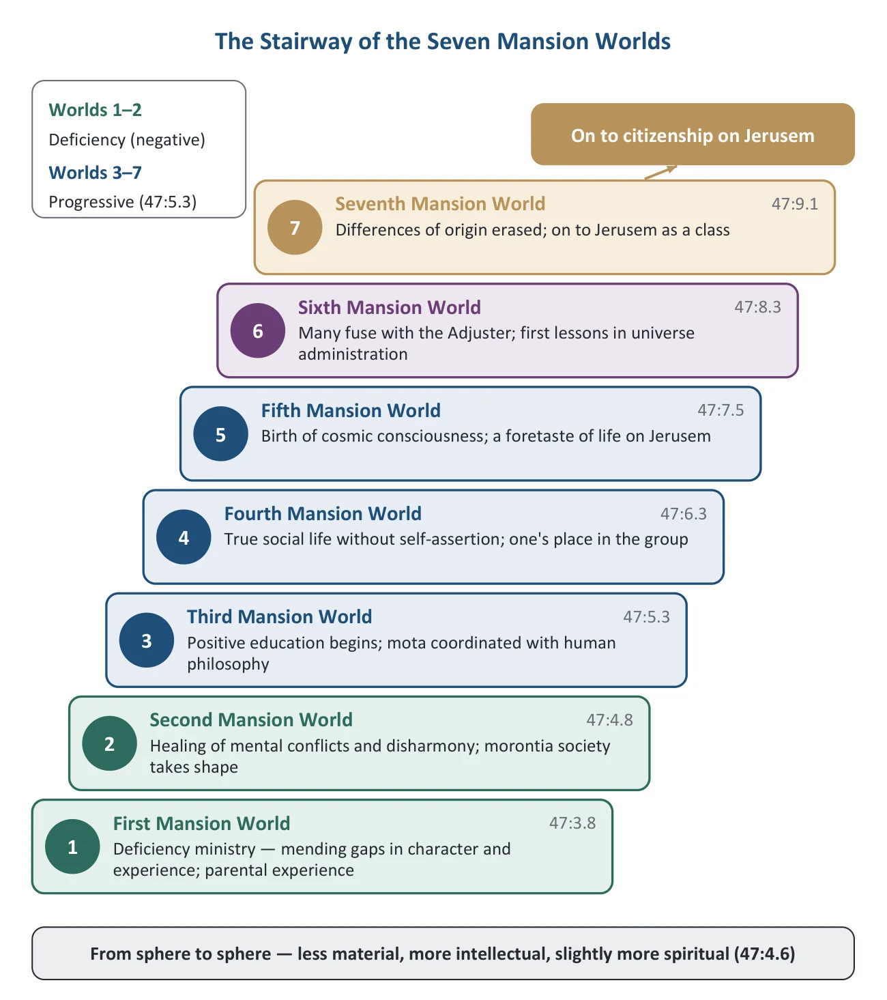
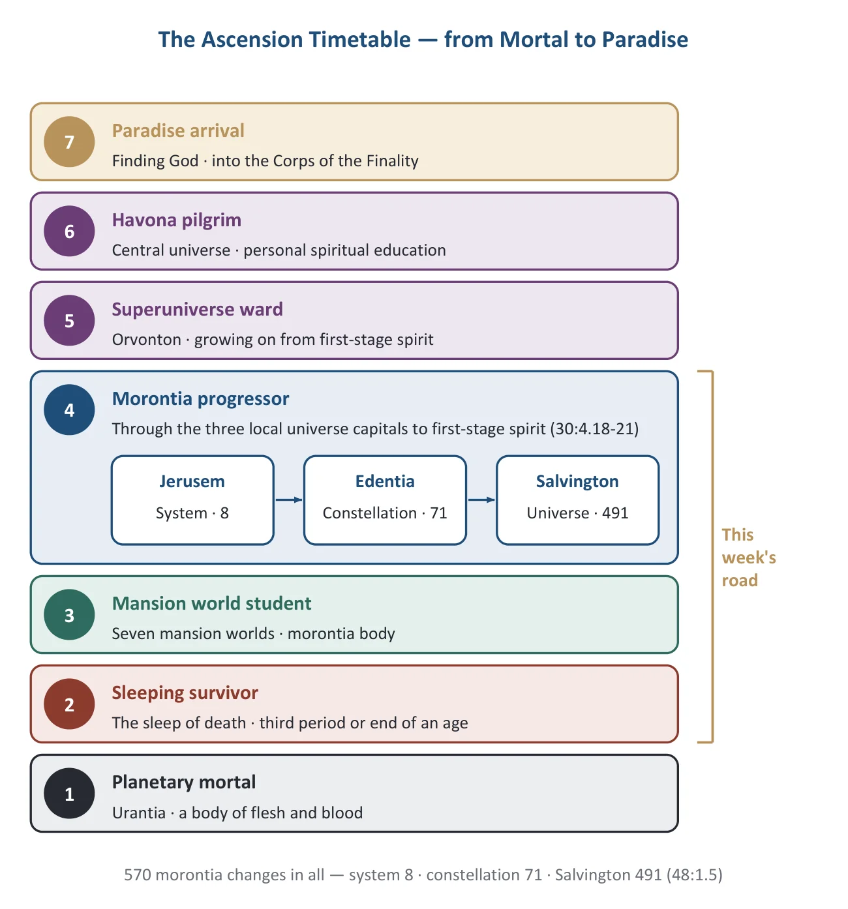

Au-delà de la mort, à l’école de l’univers
Lecture : Fascicules 47–48 · Fascicule 112:3–7 · Fascicule 30:4 · Fascicule 43:8 · Fascicule 45:7 · Fascicule 46:0 · Fascicule 35:3

Le Livre d’Urantia présente la mort non comme une fin, mais comme une porte vers la vie suivante. Après la mort, personne ne devient d’un coup un esprit parfait ; on gravit plutôt, marche après marche, le stade morontiel qui se situe entre la matière et l’esprit. Les premières marches, les sept mondes des maisons, sont une école où ce qui était resté inachevé sur terre est complété et redressé, et où beaucoup fusionnent pour toujours avec l’Ajusteur intérieur. Cette semaine, nous suivons le chemin d’ascension de l’univers local, du matin de la résurrection jusqu’à Jérusem, Édentia et Salvington.
Récit d’ouverture
Les familles qui veillent au chevet d’un mourant se posent souvent les mêmes dernières questions. Cette personne sera-t-elle toujours la même ? Nous reverrons-nous ? Qu’advient-il d’une vie interrompue trop tôt ?
Depuis longtemps, on propose aux gens deux sortes de réponses. L’une dit que la mort met fin à tout. L’autre dit qu’au moment de la mort, on passe directement à une récompense ou à un châtiment éternels. Le Livre d’Urantia montre une troisième voie. La mort ressemble plutôt à un changement d’école. Je me réveille en étant moi-même, je reprends mes études là où je les avais laissées, et je peux chercher ceux qui m’ont précédé. Cette semaine, nous parcourons cette nouvelle école, de sa porte d’entrée jusqu’au jour de la remise des diplômes.
1. La mort est une autre naissance
Il n’y a pas de magie dans la mort
L’enseignement du livre sur la vie après la mort commence par une affirmation ferme : la mort ne transforme personne en un être achevé en un instant.
La vie morontielle, s’étendant comme elle le fait sur les divers stades de la carrière de l’univers local, est la seule méthode possible par laquelle les mortels matériels peuvent atteindre le seuil du monde spirituel. Quelle vertu magique la mort, dissolution naturelle du corps matériel, pourrait-elle avoir pour que, par un aussi simple pas, elle puisse transformer instantanément le mental mortel et matériel en un esprit immortel et rendu parfait ? Ces croyances ne sont que des superstitions ignorantes et des fables plaisantes.48:0.2
« Morontia » désigne l’état intermédiaire situé entre la matière et l’esprit. Personne ne passe d’un seul bond de la vie matérielle à la vie spirituelle. Un long pont enjambe l’intervalle, et ce pont est la carrière morontielle. Et ce pont n’apparait pas soudain au moment de la mort. La vie morontielle a déjà commencé ici-bas sur terre, au moment où l’Ajusteur arrive et où l’âme est conçue (48:6.2).
Ce qui se passe au moment de la mort
Alors, quand la respiration s’arrête, qu’est-ce qui va où ? Le fascicule 112 explique que le corps, l’Ajusteur et l’âme prennent chacun un chemin différent.
Après la mort, le corps matériel retourne au monde élémental d’où il provenait, mais deux facteurs immatériels de la personnalité survivante persistent : en premier lieu, l’Ajusteur de Pensée préexistant, avec la mémoire transcrite de la carrière mortelle, se rend sur Divinington ; en second lieu, l’âme morontielle immortelle du trépassé est confiée au gardien de la destinée. Ces phases et aspects de l’âme, ces formules d’identité jadis cinétiques et maintenant statiques, sont essentielles pour la repersonnalisation sur les mondes morontiels ; et c’est la réunion de l’Ajusteur et de l’âme qui reconstitue la personnalité survivante, qui vous rend de nouveau conscient au moment du réveil morontiel.112:3.5
Le corps retourne à la poussière, l’Ajusteur rentre chez lui pour un temps en emportant les éléments dignes d’intérêt de la vie, et l’âme est confiée à un ange gardien. Quand ces trois se retrouvent, c’est la résurrection. Et que traverse l’âme endormie ? Rien du tout, répond le livre.
Cet enfant, dont la signification persiste et la valeur survit, est entièrement inconscient pendant la période allant de la mort à la repersonnalisation ; il est confié au gardien séraphique de la destinée pendant toute la période d’attente. Après la mort, vous n’agirez pas en tant qu’être conscient avant d’avoir atteint la nouvelle conscience morontielle sur les mondes des maisons de Satania.112:5.13
| Élément | Où il va après la mort | Ce qu’il fait |
|---|---|---|
| Corps matériel | Le monde élémental, c’est-à-dire la poussière | N’est plus utilisé |
| Ajusteur de Pensée | Divinington | Conserve la transcription digne d’intérêt du mental |
| Âme | La garde du gardien de la destinée | Conserve le modèle de l’identité, inconsciente |
| Personnalité | L’unicité conférée par le Père | Réapparait lors du réassemblage |
| Conscience | Suspendue pour un temps | Revient au réveil sur les mondes des maisons |
Tout de suite, ou à la fin d’un âge
Tout le monde ne se réveille pas au même moment. Ceux qui ont suffisamment grandi pour recevoir un ange gardien personnel s’éveillent directement sur les mondes des maisons, à la « troisième période ». Les autres s’éveillent en groupe quand un âge prend fin et qu’un Fils de Dieu fait l’appel nominal ; on les appelle « survivants endormis » (30:4.11). Une longue attente est-elle un désavantage ?
L’écoulement du temps n’a aucune importance pour les mortels endormis ; ils sont totalement inconscients et oublieux de la durée de leur repos. Lors du réassemblage de leur personnalité à la fin d’un âge, ceux qui auront dormi cinq-mille ans ne réagiront pas différemment de ceux qui se seront reposés cinq jours.30:4.12
Et si un cas est incertain ? Le fascicule 112 dit que le gouvernement de l’univers tranche toujours en faveur de la personne.
Les gouvernements d’Orvonton et de Nébadon ne prétendent pas atteindre une perfection absolue dans l’exécution détaillée du plan universel de repersonnalisation des mortels, mais ils prétendent manifester de la patience, de la tolérance, de la compréhension et une sympathie miséricordieuse, et ils le font réellement. Nous préférons assumer le risque d’une rébellion dans un système plutôt que de courir le risque de priver un seul individu, se débattant dans n’importe quel monde évolutionnaire, de la joie éternelle de poursuivre la carrière ascendante.112:5.8
Le matin de la résurrection
Le lieu du réveil, ce sont les salles de résurrection du premier monde des maisons, un vaste temple où se rassemble la personnalité.
… la véritable reconstitution consciente d’une personnalité actuelle et complète a lieu dans les salles de résurrection de la première maisonnia. Pendant toute l’éternité, vous conserverez la mémoire des profondes impressions que vous aurez ressenties en assistant pour la première fois à ces matinées de résurrection.47:3.5
Celui qui se réveille n’est pas un étranger. La personne même qui a vécu sur terre ouvre de nouveaux yeux dans un nouveau corps.
Sur les mondes des maisons, les survivants mortels ressuscités reprennent le fil de leur vie exactement au point où ils l’ont laissée quand ils ont été surpris par la mort. En allant d’Urantia au premier monde des maisons, vous remarquerez un changement considérable, mais, si vous étiez venu d’une sphère du temps plus normale et progressive, vous vous seriez à peine rendu compte de la différence, sauf par le fait que vous vous trouvez en possession d’un autre corps ; le tabernacle de chair et de sang a été laissé en arrière sur le monde de nativité.47:3.1
L’expression « exactement au point où ils l’ont laissée » est importante. La mort ne rend personne plus sage, et personne plus saint.
Sur le monde des maisons numéro un (ou sur un autre si votre statut est plus élevé) vous reprendrez votre entrainement intellectuel et votre développement spirituel au niveau exact où il a été interrompu par la mort. Entre le moment de la mort planétaire ou du transfert et celui de la résurrection sur le monde des maisons, les mortels ne gagnent absolument rien, à part l’expérience du fait de la survie. Vous commencez là-bas exactement au point où vous en étiez en partant d’ici.47:3.7
Cela peut paraitre sévère, mais c’est en réalité une consolation. Tout ce que nous recueillons aujourd’hui d’apprentissage et d’amour devient, tel quel, le point de départ de la vie suivante.

Mots nouveaux
- Morontia : l’état intermédiaire situé entre la matière et l’esprit ; après la mort, on le traverse et l’on devient peu à peu esprit.
- Âme : le moi immortel que le mental humain et l’Ajusteur intérieur font grandir ensemble, et qui survit à la mort.
- Gardien de la destinée : l’ange gardien affecté à une personne, qui garde l’âme de celle-ci après la mort.
- Divinington : l’un des mondes du Père autour du Paradis, le foyer des Ajusteurs de Pensée.
Dissiper un malentendu
Un malentendu courant : pendant un temps, les âmes des morts errent sur terre et parlent aux vivants, ou bien elles renaissent dans un autre corps. Ce que dit le Livre d’Urantia : jusqu’à la résurrection, l’âme repose entièrement inconsciente sous la garde d’un ange gardien. Ceux qui sont partis pour les mondes des maisons ne peuvent pas envoyer de messages à ceux qu’ils aimaient, et un Ajusteur parti ne revient jamais sur terre (112:3.7). La résurrection n’est pas une renaissance sur terre ; c’est un réveil sur les mondes des maisons.
2. L’escalier des sept mondes des maisons
De nombreuses demeures dans la maison du Père
Le nom de « mondes des maisons » vient d’une parole de Jésus. Le fascicule 47 explique ce nom dès ses premières lignes.
LORSQUE le Fils Créateur séjourna sur Urantia, il parla des « nombreuses maisons dans l’univers du Père ». Dans un certain sens, les cinquante-six mondes qui entourent Jérusem sont tous consacrés à la culture transitionnelle des mortels ascendants, mais le nom de mondes des maisons est plus spécifiquement attribué aux sept satellites du monde numéro un.47:0.1
Sept « mondes de transition » tournent autour de Jérusem, la capitale de notre système local, et sept satellites tournent à leur tour autour du premier d’entre eux. Ces satellites sont les mondes des maisons.
En regard de la Bible
Lors de sa dernière soirée, Jésus dit : « Il y a plusieurs demeures dans la maison de mon Père » (Jean 14:2). Le Livre d’Urantia comprend cette parole comme une allusion aux mondes éducatifs réels où nous séjournons d’abord après la mort (30:4.17, 47:0.1). Les paroles de Paul, « il est semé corps animal, il ressuscite corps spirituel » (1 Corinthiens 15:44), peuvent elles aussi être lues en regard du matin de la résurrection, où nous nous éveillons sous une forme nouvelle.
Les dix premiers jours
La première chose donnée à ceux qui s’éveillent n’est ni un examen ni un jugement, mais le repos et les retrouvailles.
Partant des salles de résurrection, vous allez au secteur Melchizédek où l’on vous affecte une résidence permanente. Vous entrez alors dans une période de dix jours de liberté personnelle. Vous êtes libre d’explorer le voisinage immédiat de votre nouveau foyer et de vous familiariser avec le programme qui vous attend dans l’avenir immédiat. Vous avez aussi le temps de satisfaire votre désir de consulter le registre des inscriptions et de rendre visite à ceux que vous aimiez et aux autres amis terrestres qui vous ont précédé sur ces mondes. À la fin de vos dix jours de loisirs, vous commencez la deuxième étape du voyage vers le Paradis, car les mondes des maisons ne sont pas simplement des planètes où l’on vous retient, mais des sphères d’entrainement effectif.47:3.6
Voilà la réponse du livre à la question « Nous reverrons-nous ? ». Et quand les dix jours de repos sont terminés, les mondes des maisons deviennent une école.
Le premier monde — là où ce qui manque est complété
Sur le premier monde des maisons, les leçons sont presque toutes des leçons de rattrapage.
Presque toute l’expérience du monde des maisons numéro un concerne les soins apportés aux déficiences. Les survivants qui arrivent sur cette première sphère de retenue présentent des défauts de caractère si nombreux et si variés, et de telles déficiences d’expérience humaine, que le royaume consacre ses activités majeures à corriger et à guérir ces multiples héritages de la vie incarnée sur les mondes matériels évolutionnaires du temps et de l’espace.47:3.8
Chacun quitte ce monde avec quelques blancs à remplir. Le premier monde des maisons ne reproche ces blancs à personne ; il les remplit. L’expérience parentale en est un exemple marquant. Ceux qui n’ont pas eu l’occasion d’élever des enfants sur terre acquièrent cette expérience dans les demeures des Fils Matériels de Jérusem ou dans la nursery probatoire (47:1.4-6). Et les enfants morts trop jeunes ne sont pas oubliés non plus.
Ce réveil a lieu au moment précis de l’arrivée d’un des parents sur le premier monde des maisons. On donne alors à ces enfants, tels qu’ils sont, toutes les occasions de choisir le chemin du ciel, exactement comme ils auraient pu faire leur choix sur les mondes où la mort a si prématurément mis fin à leur carrière.47:2.2
Un peu plus spirituel à chaque marche
Chacun reste aussi longtemps qu’il le faut, puis entre dans le « sommeil de translation » et passe au monde suivant, en recevant chaque fois un nouveau corps morontiel (47:3.10, 47:4.4). La direction de l’escalier est claire.
… maisonnia numéro un est une sphère très matérielle présentant les débuts du régime morontiel. Vous êtes encore presque humain et peu éloigné des points de vue limités de la vie terrestre, mais chaque monde apporte un progrès défini. De sphère en sphère, vous devenez moins matériel, plus intellectuel et un peu plus spirituel. C’est sur les trois derniers de ces sept mondes de progrès que le progrès spirituel est le plus accentué.47:4.6
Remarquez les mots « un peu ». Même au ciel, la croissance ne vient pas d’un seul coup. Sur le deuxième monde, les conflits du mental sont guéris (47:4.8), et ce n’est que sur le troisième que commence une éducation tournée vers l’avant.
L’éducation sur les deux premiers mondes des maisons est plutôt de nature négative —concernant les déficiences — en ce sens qu’elle s’occupe de compléter l’expérience de la vie incarnée. Sur ce troisième monde des maisons, les survivants commencent réellement leur culture morontielle progressive.47:5.3
Sur le quatrième monde, les ascendeurs apprennent pour la première fois une vraie vie sociale où personne ne se met en avant (47:6.3). Puis, sur le cinquième monde, vient un grand tournant.
Une véritable naissance de la conscience cosmique a lieu sur maisonnia numéro cinq. Vous commencez à penser en termes d’univers. C’est vraiment une période d’expansion des horizons. … L’étude devient volontaire, le service désintéressé devient naturel et l’adoration devient spontanée. Un vrai caractère morontiel commence à éclore et une véritable créature morontielle à évoluer.47:7.5
Quand ce qui se faisait autrefois par l’effort commence à couler de source, c’est un signe de croissance. La fusion sur le sixième monde est traitée à la section 4. Sur le septième monde, même les différences dues à la planète d’origine sont effacées.
L’expérience sur cette sphère est le couronnement de la carrière qui suit immédiatement la mort. … Toutes les différences perceptibles entre les mortels venant des mondes isolés et retardés, et les survivants des sphères plus avancées et éclairées sont pratiquement effacées pendant le séjour sur le septième monde des maisons. Ici, vous serez purgé de toutes les traces d’une hérédité malheureuse, d’un environnement malsain et des tendances planétaires non spirituelles.47:9.1
C’est la promesse qu’être né sur Urantia, un monde touché par la rébellion, ne sera pas un fardeau éternel. Ceux qui achèvent le septième monde partent ensemble pour Jérusem, en classe (47:9.3).

3. La vie morontielle — compagnons, éducateurs et mémoire
Me souviendrai-je de moi-même ?
La clé de la question « Serai-je encore moi ? », c’est la mémoire.
Au cours de votre ascension dans la vie morontielle, vous conservez intégralement la mémoire de votre Ajusteur. Les associations mentales qui étaient purement animales et entièrement matérielles ont péri naturellement avec le cerveau physique, mais toutes les choses valables de votre vie mentale qui avaient une valeur de survie ont eu leur contrepartie établie par l’Ajusteur et sont retenues comme partie de la mémoire personnelle tout au long de la carrière ascendante. Vous resterez conscient de toutes vos expériences valables quand vous avancerez d’un monde des maisons à un autre et d’une section de l’univers à une autre — même jusqu’au Paradis.47:4.5
Ce qui a de la valeur demeure ; ce qui n’a pas de sens disparait avec le cerveau. Au début, la vie passée peut sembler un rêve vague, mais elle devient plus nette avec le temps (112:5.21). Et les liens entre les personnes ne sont jamais rejetés.
Mais la personnalité et les relations entre personnalités ne sont jamais des échafaudages ; la mémoire humaine des relations de personnalités a une valeur cosmique et persistera. Sur les mondes des maisons, non seulement vous connaitrez et serez connus de ceux qui furent vos associés dans la courte mais mystérieuse vie physique sur Urantia, mais vous vous les rappellerez et ils se souviendront de vous.112:5.22
Un corps dont l’extérieur reflète l’intérieur
Sur les mondes des maisons, on continue de manger, de boire et de se reposer (47:4.6). Personne ne se transforme en fantôme. Il y a cependant une grande différence.
Dans la vie physique, les mortels peuvent être très beaux extérieurement tout en étant laids intérieurement. Dans la vie morontielle, la forme visible de la personnalité varie directement d’après la nature de la personnalité intérieure, en s’y adaptant de plus en plus à mesure que les niveaux s’élèvent.112:6.3
Dans les mondes morontiels, la personne intérieure se voit clairement à l’extérieur. Le chemin pour devenir beau là-bas commence aujourd’hui, en prenant soin de son cœur.
Un ami chaleureux : le Compagnon de la Morontia
Personne ne parcourt seul la route des mondes des maisons. Un ami est là dès l’instant du réveil.
L’un d’eux sera certainement là pour vous accueillir quand vous vous réveillerez de votre premier sommeil de transit temporel sur le monde initial des maisons, quand vous ferez l’expérience de la résurrection dans la vie morontielle après la mort dans la chair. Depuis le moment où vous serez ainsi officiellement reçu à votre réveil et jusqu’au jour où vous quitterez l’univers local en tant qu’esprit du premier stade, ces Compagnons de la Morontia vous accompagneront toujours.48:3.8
Le Compagnon de la Morontia est à la fois guide, interprète et compagnon d’excursion. Le fascicule 48 ajoute une remarque charmante.
Techniquement, ils ne sont indispensables à aucune partie de votre expérience de survie. Vous pourriez atteindre Salvington sans eux, mais ils vous manqueraient beaucoup. Ils constituent le luxe de la personnalité de votre carrière ascendante dans l’univers local.48:3.18
Le plan de Dieu ne contient pas seulement le nécessaire, mais aussi la joie. La vie ascendante se partage presque également entre le travail et le jeu (48:4.1), et le rire y tient une place importante.
L’une des fonctions de l’humour est de nous aider tous à nous prendre moins au sérieux. L’humour est l’antidote divin contre l’exaltation de l’égo.48:4.15
Les Éducateurs des Mondes des Maisons et les trois écoles
Les Éducateurs des Mondes des Maisons sont les chérubins et les sanobins qui assistaient autrefois les anges gardiens ici sur terre. Ayant déjà partagé notre expérience, ils nous comprennent bien (48:5.9). Leurs écoles sont organisées ainsi.
Dans les écoles de la vie morontielle, ces éducateurs s’occupent d’enseigner les individus, les groupes, les classes et les masses. Sur les mondes des maisons, les écoles sont organisées en trois groupes généraux de cent divisions chacun : les écoles de pensée, les écoles de sentiment et les écoles d’action. Quand vous atteignez la constellation, il s’y ajoute les écoles d’éthique, les écoles d’administration et les écoles d’adaptation sociale. Sur les mondes-sièges de l’univers, vous entrerez dans les écoles de philosophie, de divinité et de pure spiritualité.48:5.6
Savoir, sentir et vivre doivent grandir ensemble. Et dans cette école, il n’y a pas de raccourcis.
Les choses que vous auriez pu apprendre sur terre, mais que vous n’y avez pas apprises, doivent être assimilées sous la tutelle de ces maitres fidèles et patients. Il n’existe ni routes royales, ni raccourcis, ni sentiers faciles pour atteindre le Paradis. Indépendamment des variantes individuelles d’itinéraires, vous maitrisez les leçons d’une sphère avant de passer sur une autre. …48:5.7
L’un des buts de la carrière morontielle est d’extirper définitivement des survivants mortels les vestiges de caractère animal tels que temporisation, équivoques, insincérité, échappatoires aux problèmes, injustice et recherche de la facilité.48:5.8
La temporisation vient en tête de liste. Les devoirs remis à plus tard sur terre nous attendront encore là-bas. L’une des maximes de la philosophie humaine employées sur le premier monde des maisons pour enseigner la « mota » résume exactement l’enseignement de cette semaine (48:7.1).
La destinée de l’éternité se détermine d’instant en instant par les accomplissements de la vie quotidienne. Les actes d’aujourd’hui forment la destinée de demain.48:7.26

Mots nouveaux
- Compagnons de la Morontia : des enfants de l’Esprit-Mère de l’univers local, amis qui accueillent et guident les ascendeurs.
- Éducateurs des Mondes des Maisons : des chérubins et des sanobins glorifiés, autrefois auxiliaires des anges gardiens, qui enseignent maintenant les ascendeurs.
- Mota : la sagesse morontielle, plus élevée que la philosophie humaine.
4. Le jour de l’unité avec l’Ajusteur
Un âge brillant
L’Ajusteur de Pensée qui a habité silencieusement en une personne deviendra un jour un avec elle pour toujours. C’est la « fusion ». La fusion a lieu habituellement sur les mondes des maisons ou sur Jérusem, mais il arrive qu’elle se produise sur terre sans passer par la mort, et parfois elle est retardée jusqu’à la capitale de l’univers (112:7.3).
C’est un âge brillant pour les mortels ascendants. On y assiste habituellement à la fusion parfaite du mental humain et de l’Ajusteur divin. En potentiel, cette fusion peut s’être produite auparavant, mais il arrive bien souvent que l’identité opératoire effective ne soit pas atteinte avant l’époque du séjour sur le cinquième monde des maisons et même sur le sixième.47:8.3
Le jour de la fusion, une courte cérémonie a lieu sous les yeux des compagnons.
L’union de l’âme immortelle évoluante et de l’Ajusteur éternel et divin est marquée par la convocation séraphique du superange superviseur chargé des survivants ressuscités et de l’archange d’enregistrement pour ceux qui vont en jugement le troisième jour. Alors, en présence des compagnons morontiels de l’intéressé, ces messagers de confirmation proclament : « Celui-ci est un fils bienaimé en qui j’ai trouvé mon plaisir. » Cette simple cérémonie marque l’entrée d’un mortel ascendant dans la carrière éternelle de service du Paradis.47:8.4
Immédiatement après confirmation de la fusion avec l’Ajusteur, le nouvel être morontiel est pour la première fois présenté à ses compagnons sous son nouveau nom. Puis on lui accorde les quarante jours de retraite spirituelle de toutes les activités courantes pour qu’il communie avec lui-même et choisisse l’une des routes optionnelles pour Havona, et pour qu’il fasse une sélection entre les techniques différentielles pour atteindre le Paradis.47:8.5
La fusion n’est pas une fin, mais un nouveau commencement.
En regard de la Bible
Lorsque Jésus fut baptisé dans le Jourdain, une voix venue des cieux dit : « Celui-ci est mon Fils bien-aimé, en qui j’ai mis toute mon affection » (Matthieu 3:17). Le Livre d’Urantia nous apprend que des paroles semblables sont prononcées sur chaque ascendeur qui fusionne avec l’Ajusteur (47:8.4). Le « nom nouveau » écrit sur « un caillou blanc » dont parle Apocalypse 2:17 peut lui aussi être lu en regard du nouveau nom reçu après la fusion.
Ne plus jamais être séparés
Après la fusion, il n’y a plus aucun danger de perdre la vie éternelle (112:7.4).
Pendant toute cette magnifique ascension, l’Ajusteur de Pensée est le gage divin de la stabilisation spirituelle future et entière du mortel ascendant. Entretemps, la présence du libre arbitre humain procure à l’Ajusteur un canal éternel pour libérer la nature divine et infinie. Maintenant, ces deux identités n’en font plus qu’une ; nul évènement du temps ou de l’éternité ne peut plus séparer l’homme et l’Ajusteur …112:7.10
L’humain reçoit de l’Ajusteur l’éternité, et l’Ajusteur reçoit de l’humain un canal de personnalité. Vu du côté de Dieu, c’est l’accomplissement d’une promesse.
Avec la fusion de l’Ajusteur, le Père Universel a accompli sa promesse de se donner lui-même à ses créatures matérielles. Il a exécuté la promesse et le plan de l’effusion éternelle de divinité sur l’humanité. Maintenant, commence la tentative humaine pour réaliser et actualiser les possibilités illimitées inhérentes à l’association céleste avec Dieu, qui est ainsi devenue un fait.112:7.14
Même ainsi, les êtres fusionnés sont encore quelque peu matériels et un peu inférieurs aux anges (47:8.6). La fusion garantit l’éternité ; elle ne met pas fin à la croissance. La semaine 10 examine les Ajusteurs plus en profondeur.
Dissiper un malentendu
Un malentendu courant : devenir un avec Dieu signifie que le moi individuel disparait, comme une goutte d’eau qui se dissout dans la mer. Ce que dit le Livre d’Urantia : l’être fusionné est une seule personnalité qui ne peut être décomposée en parties (112:7.8), et pourtant, dans toutes les questions de personnalité, c’est l’humain qui a la préséance, parce que c’est lui qui, le premier, a possédé la personnalité (112:7.12). L’être fusionné garde jusqu’au bout le rang de « mortel ascendant ». Le moi n’est pas effacé ; je reste moi-même pour toujours.
5. Jérusem, Édentia et Salvington
Jérusem — capitale du système
Ceux qui achèvent le septième monde des maisons sont accompagnés au départ par leurs compagnons rassemblés sur la mer de verre, et s’en vont devenir citoyens de Jérusem, la capitale du système (47:9.4).
L’ordre et la bonne volonté sont restaurés et les conditions sur Jérusem se rapprochent de plus en plus du statut céleste de vos traditions, car le siège du système est vraiment le ciel imaginé par la majorité des croyants religieux du vingtième siècle.46:0.1
Ce qu’on appelle couramment le « ciel » se révèle être la première grande étape d’un long voyage. Là, les ascendeurs apprennent à gouverner ensemble.
Les Fils Melchizédeks dirigent plus de trente centres éducatifs différents sur Jérusem. Ces écoles d’apprentissage commencent avec le collège où l’on s’évalue soi-même et finissent avec les écoles de citoyenneté de Jérusem, où les Fils et Filles Matériels se joignent aux Melchizédeks et à d’autres. Ils font ensemble un effort suprême pour rendre les survivants mortels capables d’assumer les hautes responsabilités d’un gouvernement représentatif. L’univers tout entier est organisé et administré sur le plan représentatif. Un gouvernement représentatif est l’idéal divin de l’autonomie pour les êtres imparfaits.45:7.3
Édentia — là où nous apprenons à vivre ensemble
Après Jérusem vient Édentia, le siège de la constellation, entouré de soixante-dix mondes éducatifs.
Le temps passé sur les soixante-dix mondes éducatifs de culture morontielle transitionnelle, associé à l’âge de l’ascension mortelle sur Édentia, représente la période la plus calme de la carrière d’un mortel ascendant jusqu’à ce qu’il ait atteint le statut de finalitaire ; c’est vraiment la vie morontielle typique. Vous êtes réaccordés chaque fois que vous passez d’un monde culturel majeur à un autre, mais vous conservez le même corps morontiel sans jamais perdre conscience de votre personnalité. Votre séjour sur Édentia et ses sphères associées se passera principalement à maitriser l’éthique de groupe, le secret des relations agréables et profitables entre les divers ordres universels et superuniversels de personnalités intelligentes.43:8.2-3
Apprendre à vivre avec des êtres différents de soi, sans irritation, voilà le programme d’études d’Édentia (43:8.9). De ses jardins, l’auteur fait cet aveu.
Si vous aimez les fleurs, les arbustes et les arbres d’Urantia, alors vous réjouirez vos yeux de la beauté botanique et de la grandeur florale des jardins célestes d’Édentia. Malheureusement, mes facultés de description sont impuissantes à transmettre au mental mortel un concept adéquat de ces beautés des mondes célestes.43:6.8
Salvington — l’université de l’univers
Après avoir achevé la constellation, les ascendeurs arrivent à Salvington, la capitale de l’univers local. Les 490 mondes qui l’entourent sont appelés l’Université Melchizédek.
Ces sphères merveilleuses — 70 primaires et 420 tributaires — sont souvent appelées l’Université Melchizédek. Les mortels ascendants de toutes les constellations de Nébadon passent une formation sur chacun de ces 490 mondes pour acquérir leur statut résidentiel sur Salvington.35:3.1
De la première étape là-bas, le monde Melchizédek, le fascicule 35 dit ceci.
Pour un ascendeur, ce monde est probablement le lieu le plus intéressant de tout Nébadon. … Et vous n’oublierez jamais les réactions de votre premier jour de vie sur ce monde unique, pas même après avoir atteint votre destination au Paradis.35:3.11
Quand les études de Salvington sont achevées, le long pont morontiel a été franchi, et l’ascendeur devient un esprit.
Les mortels acquièrent leur identité spirituelle réelle immédiatement avant de quitter le siège de l’univers local pour les mondes récepteurs des secteurs mineurs du superunivers. Le passage du stade morontiel final au statut d’esprit initial le plus bas n’est qu’une légère transition. Un tel avancement ne change pas le mental, la personnalité et le caractère ; la forme seule subit une modification.30:4.20
Sur cette route, le corps morontiel change 570 fois en tout.
Depuis le moment où vous quittez les mondes matériels jusqu’à celui où vous êtes établi comme esprit du premier stade sur Salvington, vous subissez exactement 570 changements morontiels ascensionnels distincts, dont huit ont lieu dans le système, 71 dans la constellation, et 491 pendant le séjour sur les sphères de Salvington.48:1.5
| Étape | Quel genre de lieu | Principales leçons | Changements morontiels |
|---|---|---|---|
| Jérusem et les mondes des maisons | Capitale du système de Satania | Combler les déficiences, unifier la personnalité, gouvernement représentatif et citoyenneté | 8 |
| Édentia | Siège de la constellation de Norlatiadek, 70 mondes éducatifs | Éthique de groupe, vie commune avec d’autres êtres | 71 |
| Salvington | Capitale de l’univers local de Nébadon, 490 mondes de l’Université Melchizédek | Philosophie, divinité, pure spiritualité, administration de l’univers | 491 |
Pourquoi une si longue école ?
Pourquoi Dieu ne rend-il pas simplement les gens parfaits d’un coup pour les emmener directement au Paradis ?
Le plan de survie des mortels a un but pratique et utile. Si vous êtes les récipiendaires de tout ce travail divin et de cet entrainement soigné, ce n’est pas simplement en vue de survivre pour jouir d’une félicité perpétuelle et d’un bienêtre éternel. Il y a un but de service transcendant caché au-delà de l’horizon du présent âge de l’univers.48:8.3
L’univers n’est pas un lieu de villégiature, mais une école, et au bout de l’école, il y a le service. Dieu forme des partenaires qui travailleront à ses côtés. Une seule journée sur terre est la première année de cette école.

Mots nouveaux
- Jérusem : la capitale du système local de Satania, où les ascendeurs qui ont achevé les mondes des maisons deviennent citoyens.
- Édentia : le siège de la constellation de Norlatiadek, où, sur soixante-dix mondes éducatifs, les ascendeurs apprennent à vivre ensemble.
- Salvington : la capitale de l’univers local de Nébadon, où les ascendeurs passent par l’Université Melchizédek et deviennent esprits du premier stade.
Points clés de la semaine
- La mort ne transforme personne en esprit parfait en un instant. Entre la matière et l’esprit s’étend la carrière morontielle.
- Après la mort, le corps retourne à la poussière, l’Ajusteur va à Divinington, et l’âme est gardée par le gardien de la destinée. La résurrection est la réunion de ces trois éléments dans les salles de résurrection des mondes des maisons.
- On recommence exactement là où la mort nous a laissés, et l’on peut rechercher et retrouver les êtres chers qui nous ont précédés.
- Les sept mondes des maisons sont une école, du premier monde où l’on comble les déficiences jusqu’au septième où les ascendeurs se préparent à la citoyenneté de Jérusem ; à chaque marche, on devient un peu plus spirituel.
- Les souvenirs dignes d’intérêt et les liens entre les personnes ne disparaissent pas. Les Compagnons de la Morontia et les Éducateurs des Mondes des Maisons font la route avec nous.
- Beaucoup fusionnent avec leur Ajusteur sur le cinquième ou le sixième monde des maisons, et dès lors la carrière éternelle n’est plus en danger.
- En passant par Jérusem, Édentia et Salvington, on devient esprit du premier stade, et le but de cette longue école n’est pas un repos sans fin, mais un service transcendant.
Questions à méditer
- « Vous commencez là-bas exactement au point où vous en étiez en partant d’ici » (47:3.7). Qu’est-ce que cela dit des choses que vous remettez à plus tard aujourd’hui ?
- Les premières écoles des mondes des maisons sont les écoles de pensée, de sentiment et d’action. Quelle lumière cela jette-t-il sur l’équilibre de votre vie de foi ?
- En quoi l’idée que Dieu vous forme non pour des vacances éternelles, mais pour le service, pourrait-elle changer votre regard sur la mort et sur la vie ?
À lire pour la semaine prochaine
- Fascicules 49–55 — Les mondes habités, les âges que traverse une planète, la rébellion de Lucifer et la destinée de lumière et de vie